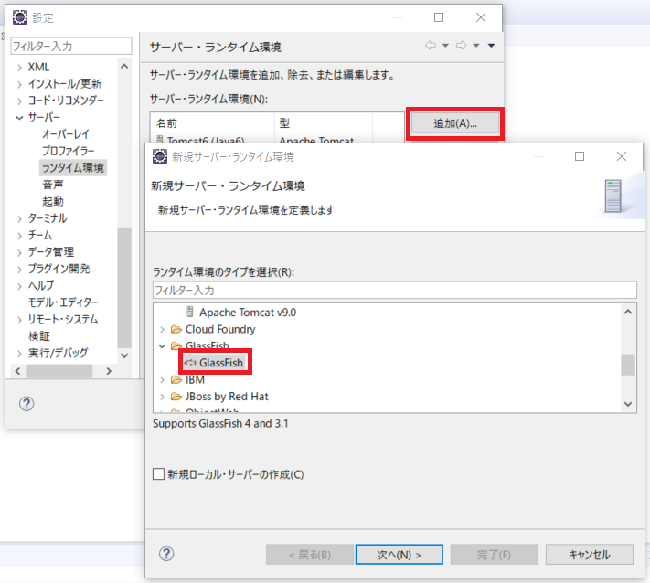
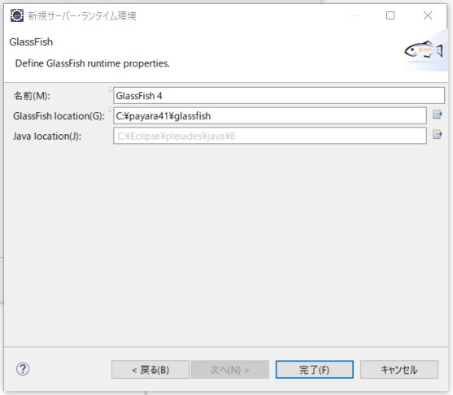
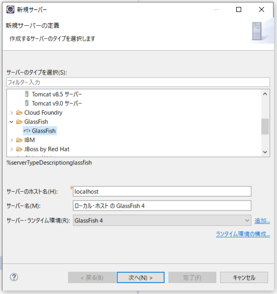
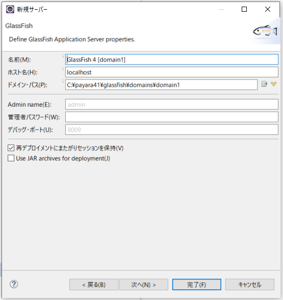
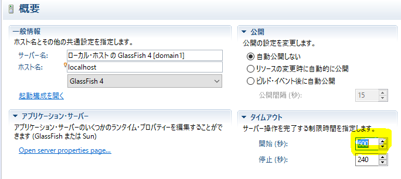
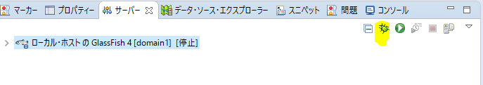
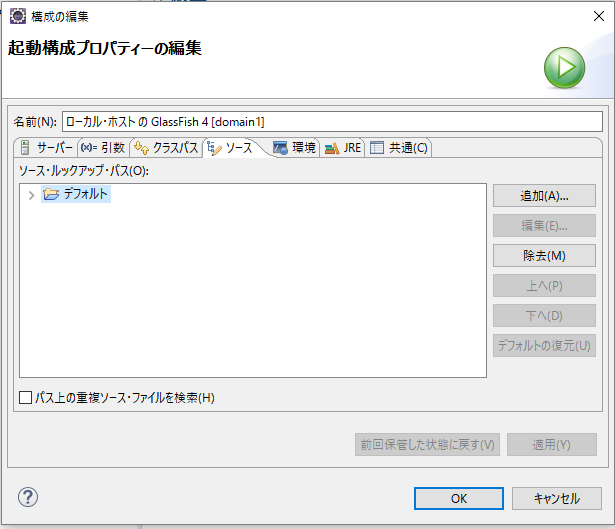

26. 付録B アドオン開発環境の作成(Eclipse)¶
この章ではEclipse(4.7), Payara Server4.1.2.181を使ってアドオン開発環境 を作成する手順について記述します。
26.1. 必要ソフトウェア¶
JDK1.8(Update 122以上)
アドオンのコンパイル、Payara Serverの起動に必要です。
Eclipse 4.7 Oxygen
ソースコードの編集等に利用します。 http://mergedoc.osdn.jp/ 等から、Java開発に対応したものをダウンロード し、展開してください。
Payara Server
Glassfish Open Source Editionを元にしたアプリケーションサーバーです。 POWER EGG3.0 Ver3.2cでは、Payara Server 4.1.2.182で動作確認 を行っています。 Payara Serverは以下のURLからダウンロード可能です。
http://www.payara.fish/all_downloads
「Download Payara Server Community」ボタン ＞ 「Download from Maven」ボタン ＞ 「Payara Distributions」リンク ＞ 「Payara Server」リンク ＞ 「Version 4.1.2.181」リンク ＞ 「Files/View All」 ＞ リンク「payara-4.1.2.181.zip」リンク
注釈
「https://repo1.maven.org/maven2/fish/payara/distributions/payara/4.1.2.181/」からもダウンロードが可能です。
Symfoware Server V12.1またはV12.3
POWER EGG3.0 Ver3.2cが対応しているデータベースです。
26.2. 開発マシン用推奨ハードウェアスペック¶
CPU : Core i5以上を推奨
Memory: 4GB以上を推奨
26.3. Paraya Serverのインストール¶
事前にJDK1.8(Update 122以上）をインストールしてください
payara-4.1.2.181.zipをC:\に展開します。
注釈
展開後、C:\payara41フォルダ内に、以下のファイル・フォルダが存在している事を確認 してください。
bin/ glassfish/ javadb/ mq/ README.txt
注釈
展開後、C:\payara41\binフォルダをパスに追加し、asadminコマンドを利用できるように してください。
JDBCドライバのコピー
postgresql-jdbc41.jarをpayara41/glassfish/domains/domain1/lib/extフォルダにコピーします。 JDBCドライバのファイルは、Symfowareのインストールフォルダのjdbc/libフォルダに存在しています。
Payara Serverの起動
以下のコマンドを実行し、glassfishを起動します。:
asadmin start-domain
JVMオプションの設定
-clientを除去し、-serverを追加
-Xmx512mを除去し、-Xms1024m, -Xmx1024mを追加
-Xrsを追加し、ログオフ時にJavaプロセスが終了しないようにする
-XX:MaxPermSize=192mを除去し、-XX:MetaspaceSize=384mを追加
-XX:+UseCompressedOopsを追加(これを設定するとヒープが32G未満の場合にポインタが32ビットになる)
-Dsun.nio.cs.mapを追加(JIS文字コードのマッピングを変更)
-Djava.net.preferIPv4Stack=trueを追加(IPV4を利用する)
-Dorg.jboss.weld.conversation.concurrentAccessTimeout=60000を追加
コマンド
asadmin delete-jvm-options -- -client asadmin create-jvm-options -- -server asadmin create-jvm-options -- -Xrs asadmin delete-jvm-options -- -Xmx512m asadmin create-jvm-options -- -Xms512m asadmin create-jvm-options -- -Xmx1024m asadmin delete-jvm-options '-XX:MaxPermSize=192m' asadmin create-jvm-options -- '-XX:MetaspaceSize=384m' asadmin create-jvm-options -- '-XX:+UseCompressedOops' asadmin create-jvm-options -- '-XX:+HeapDumpOnOutOfMemoryError' asadmin create-jvm-options -- '-Dsun.nio.cs.map=x-windows-iso2022jp/ISO-2022-JP' asadmin create-jvm-options -- '-Djava.net.preferIPv4Stack=true' asadmin create-jvm-options -- '-Dorg.jboss.weld.conversation.concurrentAccessTimeout=60000'
ログ設定
ログファイルは毎日ローテーションする
ログファイルの履歴は30ファイルとする
ログファイルの最大サイズは1GBまで
ログは1440分(1日)毎に切り替える
"timeMillis","levelValue"はログには記録しない
コマンド
asadmin set-log-attributes com.sun.enterprise.server.logging.GFFileHandler.rotationOnDateChange=true asadmin set-log-attributes com.sun.enterprise.server.logging.GFFileHandler.maxHistoryFiles=30 asadmin set-log-attributes com.sun.enterprise.server.logging.GFFileHandler.rotationLimitInBytes=1000000000 asadmin set-log-attributes com.sun.enterprise.server.logging.GFFileHandler.rotationTimelimitInMinutes=1440 asadmin set-log-attributes com.sun.enterprise.server.logging.GFFileHandler.excludeFields=timeMillis,levelValue
JDBCリソースの作成
コネクションプール(pe4jConnectionPool)の作成
asadmin create-jdbc-connection-pool ^ --datasourceclassname org.postgresql.ds.PGSimpleDataSource ^ --restype javax.sql.DataSource ^ --steadypoolsize 1 ^ --maxpoolsize 10 ^ --maxwait 60000 ^ --poolresize 2 ^ --idletimeout 300 ^ --isconnectvalidatereq=true ^ --validationmethod table ^ --validationtable zu2_slipno ^ --failconnection=false ^ --property portNUmber=27500:databaseName=pe20db:serverName=symfoserver:user=pe20:password=jupiter:maxStatements=100 ^ pe4jConnectionPool
注釈
--propertyパラメタの値は環境に合わせて変更が必要です。
portnumber: データベースのポート番号
databaseName: データベース名
serverName: データベースサーバーのサーバー名またはIPアドレス
user: データベース接続ユーザ
password: データベース接続パスワード
注釈
接続プールのping(接続確認を行うには以下のコマンドを実行します.
asadmin ping-connection-pool pe4jConnectionPool
データソース(pe4jds)の作成
asadmin create-jdbc-resource --connectionpoolid pe4jConnectionPool jdbc/pe4jds
JMSリソースの作成
Connection Factory(BatchQueueFactory)作成
asadmin create-jms-resource --restype javax.jms.ConnectionFactory jms/BatchQueueFactory asadmin create-jms-resource --restype javax.jms.ConnectionFactory jms/PWJobQueueFactory
Destination Resource(BatchJobQueue)作成
asadmin create-jmsdest --desttype queue --property maxNumMsgs=100:maxBytesPerMsg=100k Batchjobqueue asadmin create-jms-resource --restype javax.jms.Queue --property Name=Batchjobqueue jms/BatchJobQueue asadmin create-jmsdest --desttype queue --property maxNumMsgs=100:maxBytesPerMsg=100k PWJobQueue asadmin create-jms-resource --restype javax.jms.Queue --property Name=PWJobQueue jms/PWJobQueue
EJBコンテナの設定
EJBタイマーサービスのデータソースとして"jdbc/pe4jds"を設定します。:
asadmin set server-config.ejb-container.ejb-timer-service.timer-datasource=jdbc/pe4jds
http-thread-poolの設定変更
Paraya Serverのデフォルトでは、HTTP接続を処理するためのスレッドプールのサイズが5であり、 サーバー資源を有効に利用するために設定を変更します。
asadmin set server-config.thread-pools.thread-pool.http-thread-pool.max-thread-pool-size=64 asadmin set server-config.thread-pools.thread-pool.http-thread-pool.min-thread-pool-size=16 asadmin set server-config.thread-pools.thread-pool.http-thread-pool.max-queue-size=200
HTTPポートの変更(オプション)
デフォルトでは、8080ポートでアクセスするようになっています。 httpリスナーのポートを変更したい場合は、以下のコマンドを実行します。（例では8081ポートを利用する ように指定しています）
asadmin set server.network-config.network-listeners.network-listener.http-listener-1.port=8081
payara serverの再起動
以下のコマンドを実行してPayara Serverを再起動します。
asadmin stop-domain domain1 asadmin start-domain domain1
注釈
起動している場合、「http://ホスト名:ポート/」にてpayara serverのindexページが表示されます。
POWER EGG WEBのインストール先(PEWEB)の以下のフォルダをローカルマシンにコピーします (例:C:\DEV\PEWEB)
appLib
batch
cert
PDF
properties
UPLOAD
TENPU
wkhtmltox
POWER EGG WEBのインストール先(EX-KEIHIWEB)の以下のフォルダをローカルマシンにコピーします (例:C:\DEV\EX-KEIHIWEB)
appLib
コピーしたフォルダに合わせてproperties\poweregg.propertiesに記述されている以下のパスを変更します
UPLOAD_DIR
TENPU_DIR
PDF_FIR
BATCH_LOG_DEST
APNS_CER_PATH
注釈
パスの区切り文字は"/"(スラッシュ)または"\\"(バックスラッシュ２つ)にしてください。
properties\log4j.propertiesを編集し、ログの出力先を変更します
コピーしたフォルダに合わせてproperties\wkhtmltopdf.propertiesに記述されている以下のパスを変更します
wkhtmltopdf.library.path
wkhtmltopdf.font.path
POWER EGG WEBのインストール先(PEWEB)の以下のフォルダをPayara Serverのドキュメントルート(payara41\glassfish\domains\domain1\docroot)にコピーします
ClientApp
26.4. Payara ServerへのPOWER EGGの配備¶
POWER EGGの配備(デプロイ)はコマンドラインから行います。 コマンドプロンプトを開き、pe4j-ear.earファイルが存在しているフォルダに移動した後に 以下のコマンドを実行してください。(pe4j-ear.earファイルについては、事前にPOWER EGG WEBのインストール先より入手してください)
asadmin deploy --name pe4j-ear ^
--libraries C:/DEV/PEWEB/appLib,C:/DEV/EX-KEIHIWEB/appLib,C:/DEV/PEWEB/properties ^
pe4j-ear.ear
注釈
payara serverでは、glassfish v2にあった"classpath surfix"の機能は提供されていません。
このため、デプロイ時に毎回 --libraries パラメタでアプリケーションが利用する資源を 指定する必要があります。
注釈
データベースに接続できる状態でデプロイをしないとエラーになります。
26.6. earの置き換え¶
一旦配備したearを置き換える場合、配備解除と配備を行うことになりますが、 一旦サーバーを再起動しないと2回目の配備がエラーになる場合があるので注意してください。
以下の順でコマンドを実行します。
asadmin undeploy pe4j-ear
asadmin stop-domain domain1
asadmin start-domain domain1
asadmin deploy ...
26.7. Parara Server(Glassfish)に関する情報について¶
Payara ServerはGlassfish Open Source Editionをベースにしているので、 基本的に、Glassfishと同様の管理方法になります。
Glassfish V4のマニュアルは、以下のリンクから確認できます。
26.8. EclipseからのPayara Server起動設定¶
Glassfishサーバーアダプタのインストール
Eclipseから、Payara Serverを起動するには、Eclipseのメニューから 「ウィンドウ」-「設定」で設定ウィンドウを開き、左の一覧から 「サーバー」-「ランタイム環境」を選択して、「追加」ボタンを クリックし、Glassfishのアダプタをインストールします。

設定ウィンドウが表示されるので、Glasfish Locationに "C:/payara41/glassfish"を指定し、「完了」ボタンをクリックします。

サーバーの追加
「ウィンドウ」-「ビューの表示」-「その他」-「サーバー」を選択してサーバービューを表示します。
サーバービューで、右クリックし、「新規」-「サーバー」を選択します
新規サーバの定義ウィンドウで、サーバータイプに"Glassfish 4"を選択し、 ホスト名には、localhostを入力し、「次へ」をクリックします。

Glassfish locatioに "C:/payara41/glassfish"を指定し、「次へ」をクリックします。
「完了」をクリックします

サーバービューで登録したGlassFishを選択し、右クリックから「開く」を選択
タイムアウト設定の開始を600秒に設定し、保存します。

Paraya Serverのデバッグ起動
サーバービューのデバッグアイコンをクリックすることでPayara Severをデバッグ モードで起動できます。

ソースコードにブレークポイントを設定する場合は、登録したサーバーの 起動構成プロパティを開き、「ソース」タブでアドオンのプロジェクトを 追加してください。

注釈
Glassfishの管理ポートやデバッグポートがウィルス対策ソフトなど により遮断される場合があります。 Eclipseからの起動に失敗した場合はウィルス対策ソフトの設定を 確認いただくか手動でglassfishサーバの起動、停止を実施して下さい。